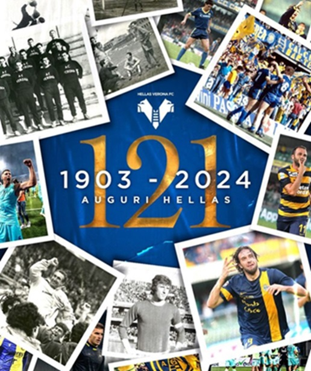

Gli studenti del Maffei che nel 1903 fondarono l'Associazione Calcio Hellas Nella primavera del 1903 un gruppo di studenti del liceo classico "Scipione Maffei" di Verona fondò una squadra di calcio e, su proposta del professor Decio Corubolo, per l'appunto insegnante di greco, la battezzò Associazione Calcio Hellas (per ricordare l'antica Ellade, ovvero l'odierna Grecia); primo presidente venne eletto il conte Fratta Pasini, con un fondo associativo pari a 32 lire. Nel 1919, dopo la prima guerra mondiale, l'Hellas assunse la denominazione Football Club Hellas Verona, accogliendo, per fusione, la società minore denominata Verona. All'avvio della Serie A a girone unico la squadra, che un anno prima aveva incorporato, per fusione, due rivali veronesi, Bentegodi e Scaligera, assumendo la denominazione A.C. Verona, partì dal campionato di Serie B, in seguito al brutto piazzamento (12º posto) ottenuto l'anno precedente nella Divisione Nazionale, che impedì al club di iscriversi alla Serie A. Al suo debutto nel campionato cadetto (1929-1930) chiuse con un incoraggiante sesto posto, con 7 punti di distacco dal Legnano promosso nella massima serie. Nel 1941, mentre imperversava il secondo conflitto mondiale, il Verona, dopo un decennio interamente trascorso in serie B, affrontò uno dei suoi peggiori momenti storici, retrocedendo in Serie C. I gialloblù riuscirono però a risalire abbastanza in fretta, nel giro di due sole stagioni (1943). Il Verona della stagione 1956-1957, che conquistò la prima promozione della sua storia nella Serie A a girone unico.Dopo essere tornato nella categoria superiore, il Verona iniziò un lungo periodo in Serie B, finché, dopo quattordici anni, vinse il suo primo campionato di Serie B: infatti, nel 1957 i gialloblù, allenati da Angelo Piccioli (secondo allenatore più presente sulla panchina scaligera con 225 panchine, dietro al solo Bagnoli), furono i protagonisti del torneo e, pareggiando in casa con il Como per 1-1 nell'ultima giornata, ottennero il punto decisivo per la tanto agognata promozione. Il Verona restò in Serie A una sola stagione (1957-1958): a un ottimo girone di andata che vide i gialloblù girare la boa alla rassicurante quota di 18 punti in 17 partite, seguì infatti un disastroso girone di ritorno che ebbe come epilogo la sconfitta contro il Bari (secondo classificato della Serie B 1957-1958) nel doppio spareggio che determinò la retrocessione della società scaligera in cadetteria. Nell'estate del 1958 il Verona assorbì un club minore veronese, l'A.S. Hellas, neopromosso in Serie C, in modo da poter riprendere la denominazione di Associazione Calcio Hellas Verona in omaggio alle sue origini. Seguirono quindi dei campionati anonimi, nobilitati però dalla semifinale della Coppa Italia 1963-1964, raggiunta con una vittoria per 1-0 in casa della Juventus. Nel 1968, dopo un'ambiziosa campagna acquisti, il Verona del neo-presidente Saverio Garonzi, guidato in panchina da Nils Liedholm, riconquistò la categoria esattamente un decennio dopo l'ultima promozione. Il salto di categoria venne guadagnato all'ultima giornata, grazie alla vittoria per 1-0 sul Padova, ma soprattutto alla vittoria in trasferta in rimonta (1-2) contro la diretta concorrente Bari, alla penultima.

L'Hellas, al ritorno in massima serie dopo la breve avventura in Serie A del 1958, stavolta si salvò con relativa facilità, conducendo una stagione equilibrata chiusa al decimo posto mentre, nelle stagioni successive, riuscì ad inanellare una serie di importanti salvezze in massima serie. Nel 1974 l'Hellas finì la stagione al quartultimo posto, evitando la retrocessione, ma fu declassato in ultima posizione e condannato alla Serie B durante i mesi estivi a causa dello "scandalo della telefonata in cui furono coinvolti il presidente della squadra Saverio Garonzi e un ex giocatore, Sergio Clerici. Il Verona ritornò comunque subito in Serie A al termine del successivo campionato cadetto (1975). Nel 1978 la squadra rimase sfortunatamente coinvolta nell'incidente ferroviario di Murazze di Vado. A causa di un disguido aereo legato al maltempo, il club veneto era ricorso al treno per raggiungere la capitale, dov'era in programma la sfida di campionato contro la Roma: i giocatori e lo staff viaggiavano sul primo vagone della "Freccia della Laguna", che in prossimità di Monzuno investì le carrozze dell'espresso Bari-Trieste deragliato pochi secondi prima. Destino volle che, al momento del disastro, la formazione si fosse spostata per il pranzo nella carrozza ristorante in coda al treno, uscendo quasi illesa dall'incidente che contò una quarantina di vittime tra le carrozze scagliate dall'urto nel dirupo sottostante. Dopo aver disputato dieci campionati su undici in Serie A dal 1968 in poi, il Verona tornò in Serie B nel 1979. In cerca di equilibrio e con un profondo ricambio di proprietà, dirigenti e giocatori, la società rimase bloccata tra i cadetti per due anni, fino all'arrivo del nuovo tecnico Osvaldo Bagnoli. Con l'arrivo dell'allenatore milanese, già giocatore dell'Hellas, ebbe inizio quello che sarebbe stato il ciclo di vittorie più importante della storia del club scaligero: nella stagione (1981-82) l'Hellas, costruito sull'asse Garella, Tricella, Di Gennaro, Penzo, vinceva il campionato cadetto e costruiva le basi per il suo futuro. L'anno successivo i gialloblù stupirono tutti e, nel girone di andata della massima serie, contesero a lungo il primo posto della classifica alla Roma, che poi vinse lo scudetto;[17] nella tornata di ritorno vi fu l'inevitabile calo di una formazione costruita senza grosse ambizioni, ma gli scaligeri riuscirono comunque a terminare il campionato al quarto posto, guadagnandosi la qualificazione all'edizione successiva della Coppa UEFA. Anche nel 1983-84 il Verona fu protagonista di un ottimo campionato: esattamente come l'anno prima, alla decima giornata era al primo posto in condominio con la Roma e, come l'anno prima, subì una flessione nel girone di ritorno che comportò un comunque brillante piazzamento finale al sesto posto.

Nel 1991, nonostante il fallimento della società, i giocatori guidati dall'allenatore Eugenio Fascetti terminarono comunque il campionato (1990-91) nel migliore dei modi, ottenendo un'insperata promozione in Serie A. La squadra retrocesse però di nuovo la stagione successiva, con diverse giornate di anticipo. Il Verona iniziò così a fare l'altalena tra la massima serie e quella cadetta. Nel 1995 il club acquisì nel frattempo il nome Hellas Verona Football Club, che mantiene ancora oggi (dopo aver usato, nei quattro anni successivi al fallimento, il nome Verona Football Club). Dopo due promozioni (1990-91 con Eugenio Fascetti e 1995-96 con Attilio Perotti) seguite da immediate retrocessioni, la vittoria nel campionato di Serie B nel 1998-99 sotto la guida del rampante Cesare Prandelli (il quale mise insieme quell'anno una striscia di otto vittorie consecutive tra la 6ª e la 13ª giornata, record per la Serie B italiana, che verrà eguagliato da Mandorlini nel 2011-12) sembrò aprire una nuova fase nella storia del club. Il terzo millennio iniziò con gli scaligeri ancora allenati da Prandelli, che, dopo un inizio difficile, avviarono una serie di risultati utili consecutivi nel girone di ritorno, chiudendo il campionato di Serie A 1999-00 al nono posto. L'anno successivo (2001), invece, l'Hellas riuscì a salvarsi solo dopo aver vinto il doppio spareggio contro la Reggina, mentre il campionato 2001-02 si concluse con la retrocessione in seguito alla brutta sconfitta esterna dei veneti contro il Piacenza (3-0). Seguirono alcune annate anonime disputate in cadetteria, con il Verona che non andò oltre a sudate salvezze. La squadrà sfiorò poi il ritorno in massima serie nel 2005, quando concluse la stagione al 7º posto, con un solo punto in meno dell'Ascoli (promosso in Serie A dopo la squalifica del Genoa e i problemi economici di Perugia e Torino). Nella stagione 2006-07 la crisi del Verona si acuì ulteriormente e la società, che aveva terminato il campionato nelle zone basse della classifica, dovette disputare i play-out contro lo Spezia, nei quali ebbe la peggio (sconfitta per 2-1 a La Spezia e 0-0 a Verona), retrocedendo in Serie C dopo sessantaquattro anni. Nella stagione 2007-08, partito con l'obiettivo di vincere il campionato e di essere "la Juventus della Serie C", il Verona chiuse invece ultimo in classifica a pari punti con il Manfredonia, evitando la retrocessione diretta solo grazie agli scontri diretti a favore; costretto a disputare i play-out contro la Pro Patria, vinse la gara di andata per 1-0 e pareggiò 1-1 al ritorno, riuscendo a salvarsi solo grazie ad un gol segnato dell'uzbeko Zeytulaev in pieno recupero. Nelle due stagioni successive le prestazioni del Verona e la sua situazione societaria migliorarono sensibilmente, tanto che nel 2009-10 la squadra dominò a lungo il campionato, senza però riuscire a fare il salto di categoria; gli scaligeri infatti dilapidarono nella volata finale il vantaggio accumulato e furono sconfitti nella finale play-off dal Pescara (2-2, 0-1).
Negli anni 2010, l'Hellas Verona ha attraversato un periodo di significativa trasformazione e tumulto, caratterizzato da alti e bassi. Dopo la promozione in Serie A nella stagione 2010-11, che rappresentava un ritorno alla massima serie dopo un lungo periodo di assenza, la squadra ha vissuto un'iniziale difficoltà ad adattarsi al livello più alto del calcio italiano. Tuttavia, sotto la guida del nuovo allenatore Andrea Mandorlini, l'Hellas è riuscito a compiere una sorprendente rimonta nella seconda metà della stagione, culminando con la conquista del quinto posto e la qualificazione ai play-off. La vittoria nei play-off ha garantito alla squadra la promozione in Serie A per la stagione successiva. Il ritorno in Serie A nella stagione 2012-13 è stato caratterizzato da un notevole successo, con l'Hellas Verona che ha chiuso al secondo posto in classifica dietro al Sassuolo, garantendosi così un posto nella massima serie italiana dopo undici anni. Il centravanti Daniele Cacia è stato un punto di riferimento fondamentale per la squadra, conquistando il titolo di capocannoniere del campionato con 24 reti. Nella stagione successiva, la squadra ha mostrato segni di crescita e consolidamento, con una solida prestazione nel girone d'andata che l'ha vista lottare per un posto nelle competizioni europee. Luca Toni, in particolare, è emerso come un attaccante prolifico, conquistando il titolo di capocannoniere della Serie A con 22 reti e stabilendo diversi record per il Verona. Tuttavia, nonostante i successi individuali, la squadra è mancata la qualificazione alle competizioni europee, chiudendo la stagione al decimo posto. Nella stagione successiva, l'Hellas Verona ha vissuto una flessione, terminando al tredicesimo posto in classifica. Nonostante ciò, Luca Toni ha continuato a brillare come capocannoniere del club e la squadra ha iniziato a prepararsi per nuove sfide e cambiamenti. Negli anni 2020, l'Hellas Verona ha continuato il suo percorso di consolidamento nella Serie A, dimostrando una maggiore stabilità e coerenza nei risultati. Sotto la guida di Ivan Jurić, la squadra ha mantenuto una posizione salda nella parte superiore della classifica, dimostrandosi una forza competitiva nel panorama calcistico italiano. Il contributo di giocatori come Miguel Veloso, Darko Lazovic e Mattia Zaccagni è stato fondamentale per il successo continuo della squadra. Nella stagione 2021-22, nonostante un cambio di allenatore con l'arrivo di Eusebio Di Francesco, l'Hellas Verona ha continuato a ottenere risultati solidi, concludendo la stagione al nono posto in classifica. I gol di Giovanni Simeone, Gianluca Caprari e Antonín Barák hanno contribuito al successo della squadra, confermandola come una delle forze emergenti nel calcio italiano. Nonostante le sfide e i cambiamenti nel corso degli anni, l'Hellas Verona ha dimostrato di essere una squadra resiliente e in continua evoluzione, pronta a affrontare le sfide future con determinazione e impegno.
